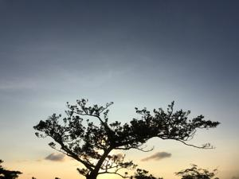
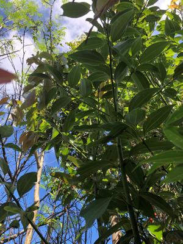
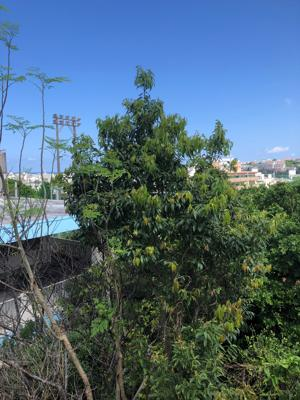

うるがいの話 ある日
最新: カラキ（琉球シナモン）【うるがいの話 ある日】とは 一日だけのプログです
『うるがいの話』の最新一日だけのプログで、通信料が少なく経済的だ。カニの画像をクリックすると全ての日付が載る『うるがいの話』サイトを表示します
|
|
【うるがいの話】 うるがい(ｳﾙｶﾞｲ urugai)とは、『もずくがに』の名前でとても大きくなります。 |
|---|---|
|
|
【カミマヤーの話】 猫のことを方言でマヤーといいます。カミマヤー（kamimayaa）とは、神の猫のことです。 |
|
【たながぁの音楽】 たながぁ（ﾀﾅｶﾞｰ tanagaa）とは手長えびのことで、何種類かあり大きいのは車 エビぐらいになります。 |

|
【ぶながぁの話】 ぶながぁ(ﾌﾞﾅｶﾞｰ bunagaa)とは、赤い髪の毛、赤い身体、そして身長は１ｍ２０ｃｍ ぐらい、川の蟹を食べているの目撃された。場所は沖縄県国頭郡大宜味村のと ある村僕の隣近所に住んでいる爺さんから、聞いた話です。 |
|
|
【ギーマの話】 ギーマ(giima)とは、山原の里山に咲くスズランに似た、 花を付けます。実は食べられます、 気が付くと口の周りが紫になっています。 |
2022年09月30日 (金）カラキ（琉球シナモン）
16:11
  
カラキとはシナモンの仲間である沖縄ニッケイの“やんばる”での呼び名です
。樹皮だけではなく、葉っぱにも香りや甘み、辛みがあり、大宜味村では昔か
ら葉をお茶にしたり、根を泡盛につけて薬用酒として利用していました。
とうとう『ちむどんどん』が終わった。最後まで・・・・、私のところでは『
カラキ』でなく『カラギ』と読んでいた。小学生のころ、山の村の同級生がカ
ラギの根っこ（一番美味しい）を持ってきて、皮をかじらせてくれた。１０年
以上も前に大宜味村の道の駅に、カラギの苗（５０センチほど）を買って、裏
庭に植えたら１０メートルほどに育ってしまった。ある日、乾燥させた葉っぱ
を刻んでミキサーで粉にしてお茶にしたら、最高！にうまかった。が、難儀な
のでその一回きりである。
ヨメのお母さんが、施設をでて、マンションに戻った。ヨメは、今日は泊まる
とのこと、これから大変な介護の生活になる。
１６時０８分 ビットコインの総資産 ￥８、１４６↑